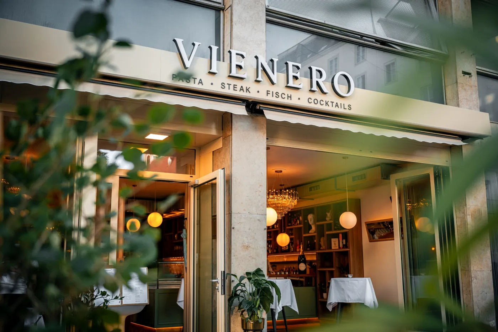
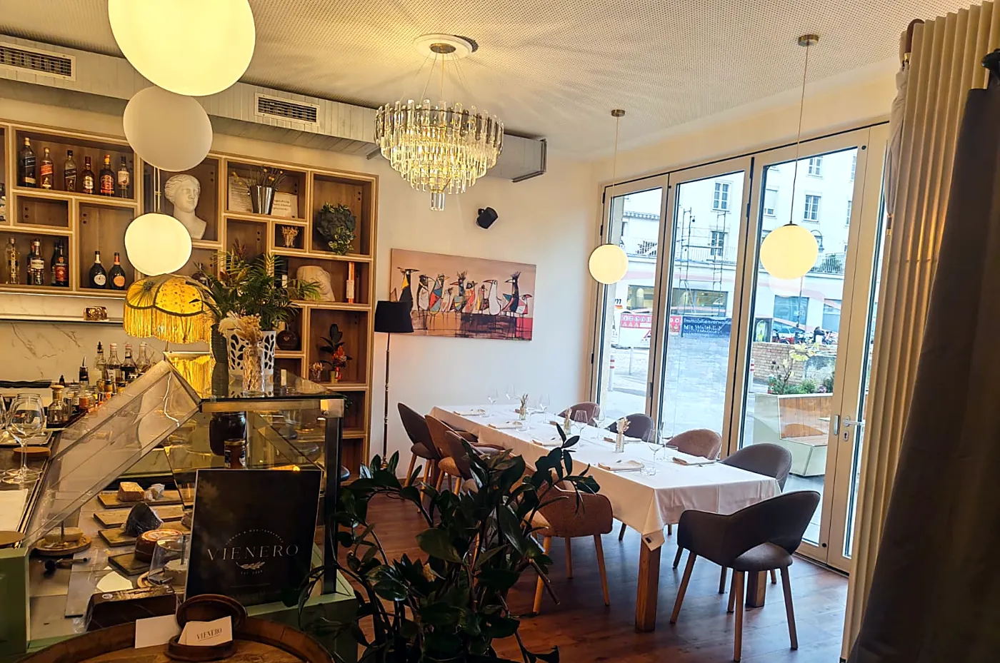

Catering in Wien ab 50 Personen
Das VIENERO kommt zu Ihnen. Für Firmenevents, Galas, Hochzeiten und private Feiern ab 50 Gästen bringen wir die Küche des VIENERO an Ihren Ort: Wiener Klassiker, mediterrane Küche und Pasta aus unserer eigenen Manufaktur. Dazu auf Wunsch Getränke, Service, Dekoration und Entertainment, alles aus einer Hand.



★ 4,4 auf Google · mehr als 1.500 Bewertungen · vegetarische, vegane und glutenfreie Speisen
Speisen, so wie es zu Ihrem Event passt
- Fingerfood: kleine Happen zum Stehempfang, ideal zum Netzwerken.
- Flying Dinner: warme und kalte Gänge in kleinen Portionen, serviert direkt an Ihre Gäste.
- Gala Dinner: mehrere Gänge am Tisch serviert, für den festlichen Abend.
- Buffet: warm und kalt, Ihre Gäste wählen selbst.
Wir stimmen die Speisen auf Ihre Gäste ab, auch vegetarisch, vegan und glutenfrei.
Getränke
Dekoration
Entertainment
Service und Personal
Auf Wunsch kommt unser Team mit und kümmert sich vor Ort um Ihre Gäste, damit Sie sich ganz auf Ihr Event konzentrieren können.
So läuft es ab
- Anfrage: Datum, Ort, Gästeanzahl und Anlass über das Formular unten oder per Mail an Reservierung@vienero.at.
- Angebot: wir melden uns meist innerhalb von 24 Stunden mit einem Vorschlag.
- Abstimmung: Speisen, Getränke, Deko und Programm legen wir gemeinsam fest.
- Ihr Event: wir kommen, kochen und servieren, Sie feiern.
Weniger als 50 Gäste?
Dann feiern Sie bei uns im Restaurant am Stadtpark, von der langen Tafel für 10 bis zum ganzen Lokal für 70 Gäste. Alles dazu auf unserer Seite zur Firmenfeier und zu Gruppen und Feiern.
So fragen Sie an
Schicken Sie uns Datum, Uhrzeit, Personenanzahl, Ort und Anlass. Wir schicken Ihnen ein passendes Angebot, meist innerhalb von 24 Stunden.
Lieber direkt? Schreiben Sie an Reservierung@vienero.at oder rufen Sie an.
Häufige Fragen zum Catering
Ab wie vielen Personen bietet das VIENERO Catering an?
Catering bieten wir ab 50 Personen an. Für kleinere Gruppen feiern Sie am besten bei uns im Restaurant, mit bis zu 70 Gästen und dem ganzen Lokal exklusiv.
Was gehört zum Catering dazu?
Sie stellen zusammen, was Sie brauchen: Speisen als Fingerfood, Flying Dinner, Gala Dinner oder Buffet, Getränke, Service und Personal, Dekoration und Entertainment wie DJ, Live Musik oder Fotobox.
Organisiert ihr auch Dekoration?
Ja. Blumendeko, Tischdeko, Kerzen und Licht, Ballons oder festliche Dekoration organisieren wir passend zu Ihrem Anlass.
Was kostet Catering vom VIENERO?
Jedes Catering stellen wir nach Ihren Wünschen zusammen. Schicken Sie uns Datum, Gästeanzahl und Ort, wir melden uns meist innerhalb von 24 Stunden mit einem Angebot.
Für welche Anlässe eignet sich das Catering?
Für Firmenevents, Kundenveranstaltungen, Sommerfeste, Galas, Hochzeiten, Geburtstage und Weihnachtsfeiern ab 50 Gästen.